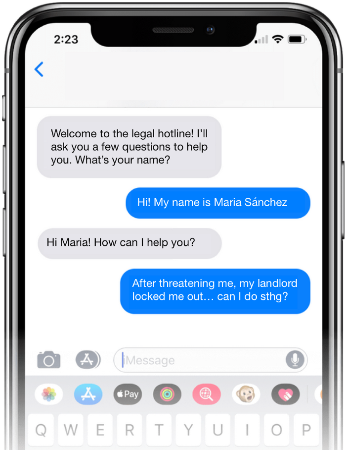

SMS Helpline for Tenants
Formerly Renter's Rights Guide project
Get Conneted to Resources
Text "HELPLINE" at 650-600-7821 to get connected to resources to support California tenants facing impacts of COVID-19.
Envía "HELPLINE" al 650-600-7821 recursos para los inquilinos de California afectados por COVID-19.
This SMS helpline is hosted by Tenants Together, a nonprofit that supports tenants in California.
Our Story
In 2017, we started a project Renter's Rights Guide. Leveraging user research and usability testing, we created a user-friendly website for San José residents to find information on housing policies, renter's rights, and housing resources.
We maintained the website until 2019. Since then, the City of San José Housing Department has improved their website user interface.

User-friendly legal information is crucial to help people navigate the forthcoming legal crisis
In December 2019, we connected with Stanford Legal Design Lab to collaborate on a SMS helpline for tenants. We contributed UX and tech strategy skills.
In April 2020, the SMS helpline for tenants was live in a soft launch. Read more about how this project improved legal hotlines with SMS.
On September 12, 2020, we participated in 8th National Day of Civic Hacking: People over Paperwork.
We hosted user testing with 25 participants. Participants shared strengths and weaknesses they identified with the tool.
This fall, we will be incorporating the feedback into a prototype, conducting another round of testing, and then launching the SMS helpline for tenants!
Interested in helping us with research and design to make this tool better? Volunteer with us! Sign up for our Slack workspace and join the #renters_rights Slack channel on our workspace.
Where can I learn more about San José housing and renter's rights?
To learn about San José housing and renter's rights, please visit the City of San José Housing Department's website
Thanks to our Partners
We partnered with Stanford Legal Design Lab, and Tenants Together.
Thanks to our Donors
We are grateful for two grants we reeived: 2017 grant from Awesome Foundation, and 2018 grant from San José's Mayor's Offie.